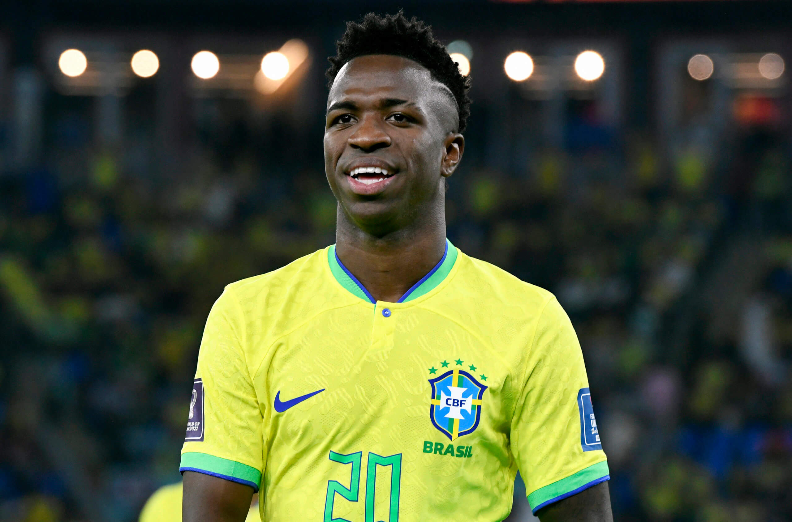
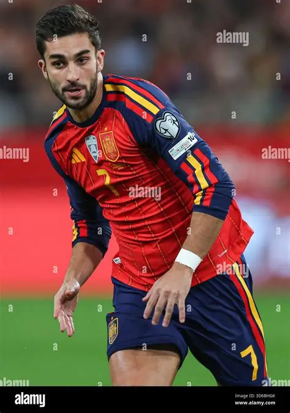
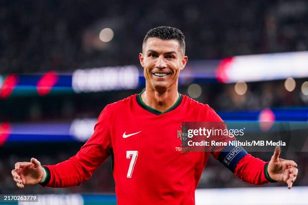
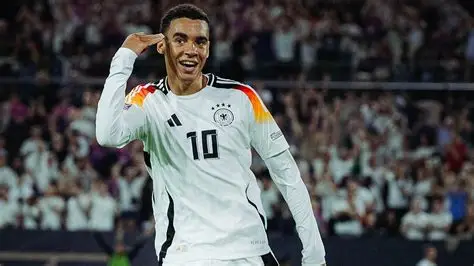

Kylian Mbappé
França
O camisa 10 francês fez uma Copa histórica, quebrando o recorde de artilharia ao marcar 10 gols no torneio e levando a França até as fases finais com sua velocidade incrível.

O camisa 10 francês fez uma Copa histórica, quebrando o recorde de artilharia ao marcar 10 gols no torneio e levando a França até as fases finais com sua velocidade incrível.

Principal referência do ataque brasileiro, comandou a Seleção Canarinho com seus dribles desconcertantes, assistências decisivas e muita liderança dentro de campo.

O gênio argentino mostrou sua genialidade mais uma vez, sendo o cérebro da equipe e conduzindo a Argentina com gols e passes mágicos até a prorrogação da grande final.

Entrou para a história do futebol espanhol ao marcar o gol do título na prorrogação contra a Argentina, coroando a campanha invicta e garantindo o bicampeonato mundial da Fúria.

Aos 41 anos, o lendário camisa 7 alcançou um feito inédito na história do esporte ao se tornar o primeiro jogador a balançar as redes em seis edições diferentes de Copa do Mundo.

O jovem maestro alemão comandou o meio-campo com muita habilidade, passes precisos e jogadas geniais, mostrando que é a grande realidade e o futuro da seleção da Alemanha.